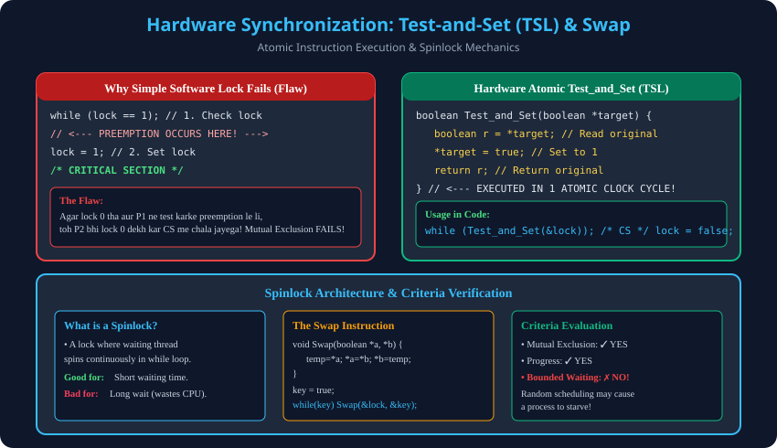

Syllabus Coverage: Gateway Classes Slides 40–59 | Software Lock Flaw, Atomic TSL Primitives, Swap Instructions, Spinlock Evaluation.
Preemption between the test (while(lock==1)) and set (lock=1) operations allows multiple processes to enter the Critical Section simultaneously, violating Mutual Exclusion.
// Hardware Atomic Primitive
boolean Test_and_Set(boolean *target) {
boolean r = *target;
*target = true;
return r;
}
// Process Synchronization Code
while (Test_and_Set(&lock)); // Spinlock busy waiting
/* CRITICAL SECTION */
lock = false; // Release lock
| Criterion | Status | Technical Reason |
|---|---|---|
| Mutual Exclusion | ✓ YES | Atomic memory bus lock prevents concurrent false returns. |
| Progress | ✓ YES | No external or remainder process blocks CS entry. |
| Bounded Waiting | ✗ NO | Random hardware spin contention cannot guarantee bounded turns (Starvation possible). |